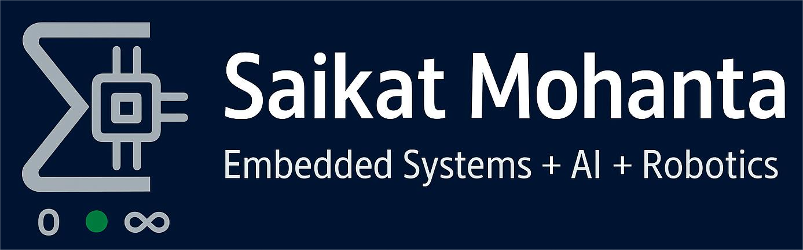
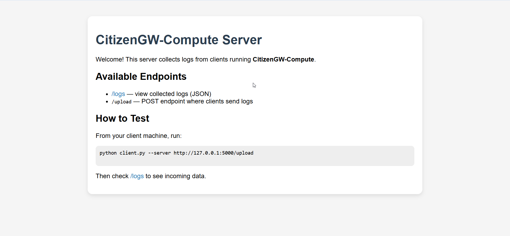
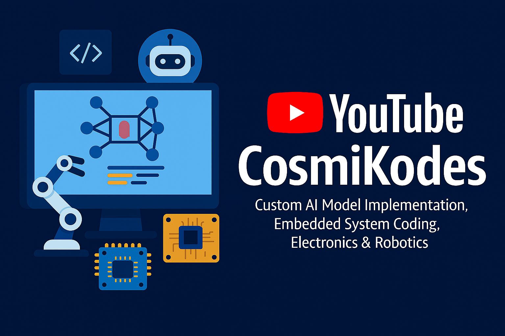

Saikat Mohanta
Firmware • Microcontrollers • Edge AI • Robotics • Sensors • PCB Design
📍 India (Open to Global Remote)
What I Do
I am an Embedded AI Engineer who builds intelligent systems on real hardware. Unlike typical ML engineers who only work in Python, I design and deploy complete end-to-end systems: Sensors → Microcontroller → Firmware → Neural Networks → Inference on Device I have hands-on experience with AVR, PIC, ESP32, ESP8266, and I implement ML models (CNNs, RNNs, Transformers) in C/C++ and Python for deployment on resource-constrained hardware. My focus is TinyML, Edge AI, robotics, and intelligent embedded devices.
Core Skills & Expertise Specialization
TinyML & Edge AI
Embedded Systems
Electronics & PCB
Robotics & CNCs, Electrical Acctuators
Why Companies Hire Me
Most of the engineers can do either: Software & AI or Hardware & electronics. I have hands on experience with both of them.
That means I can fully understand:
The pros-cons of the hardware circuitry
Write the corresponding firmware
Train the model, Deploying it on the device
Which are critical for robotics, IoT, medical devices, and AI hardware startups.
Selected Projects
Embedded Systems
Robotics
CNC & Manufacturing
Home Automation
Technical Education
Technology Stack
Languages: C, C++, Python
Microcontrollers: AVR (ATmega, ATtiny), PIC16, ESP32, ESP8266
ML & AI: MLP, CNN, RNN, Transformer (encoder-decoder, decoder-only), TinyML
Hardware & Tools: EasyEDA, Altium, Multisim, Arduino IDE, MPLAB X, Microchip Studio, LaserGRBL
What I’m Looking For
AI hardware startups
Robotics companies
IoT & Edge-AI teams
R&D labs
I open to work with:
Remote full-time roles
High-end freelance or contract work
Open Source Projects
🌌 CitizenGW-Compute

CitizenGW-Compute is an open science initiative that reimagines your computer’s raw processing power as a virtual gravitational wave antenna. Instead of trying to detect tiny clock shifts directly, we treat the total number of operations per second with deterministic dummy ANNs as amplification channel. By scaling tiny spacetime ripples into measurable deviations in throughput, everyday CPUs, GPUs, and even supercomputers can join in the hunt for gravitational waves.
🚀 Sonar Turret – 360° Ultrasonic Surveillance

Overview: The Sonar Turret is a 360° real-time ultrasonic surveillance system built with: Arduino UNO + HC-SR04 ultrasonic sensors (x3) DHT22 sensor (for environmental calibration) Python backend for data processing, object tracking, clustering, and visualization Key Features : Dynamic speed of sound correction using temperature + humidity Object clustering & tracking (velocity, direction) with DBSCAN Real-time visualization (2D or 3D) using Matplotlib Modular design: Arduino firmware + Python data pipeline
https://github.com/SaikatMohanta/Sonar360_TurrentYouTube — CosmiKodes

CosmiKodes is where electronics, robotics, and artificial intelligence meet creativity. I share hands-on project demos, tutorials, and mentorship content on: Arduino, NodeMCU, IoT & Robotics Electronics, Coding, STEM Education Real-world applications Physics & Math Whether you’re a hobbyist, student, or professional, you’ll find practical knowledge and inspiration here.
Work With Me
I collaborate with global clients on clearly defined technical scopes, feasibility studies, and implementation work. Engagements are structured to ensure transparency, documentation, and predictable delivery.
Initial Contact
If you would like to discuss a project, please initiate contact through the platform where you found this portfolio. For most projects, I work through established professional platforms to ensure secure payments, milestone-based execution, and clear communication.
Direct contact details are shared after scope alignment.
Contact 📧: saikatmohantabkp@gmail.com
GitHub: https://github.com/SaikatMohanta